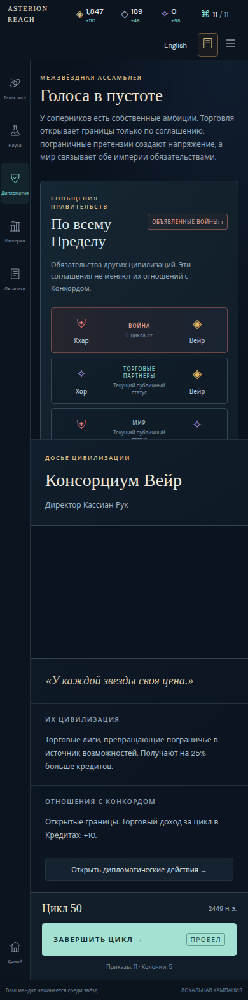
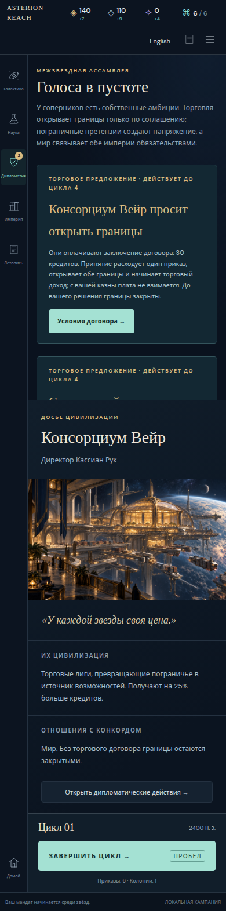
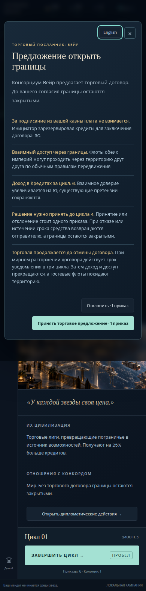
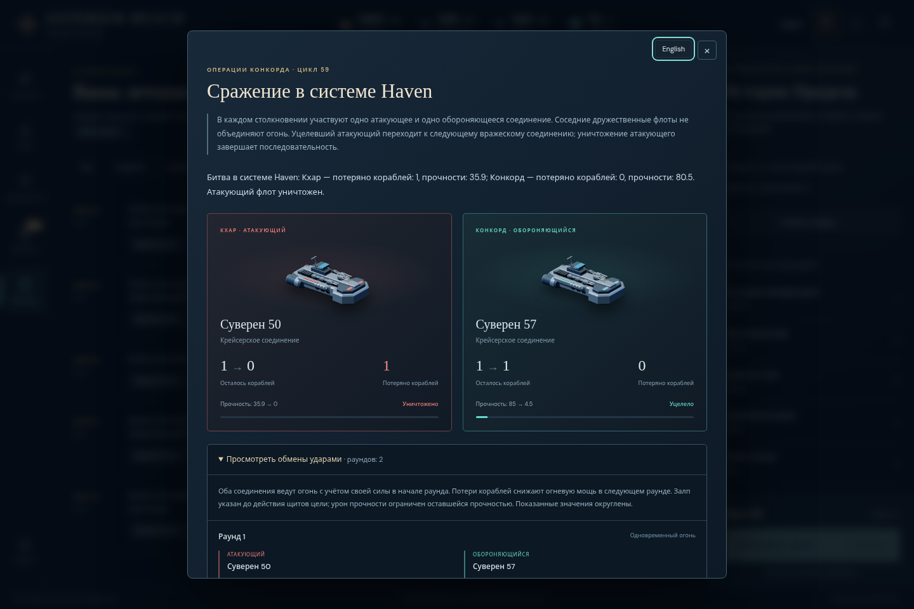
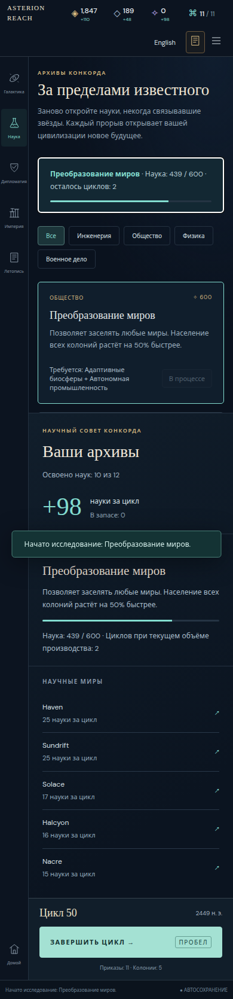

Russian review history · Original sealed report
This reading copy adds responsive wrapping to the sealed report; its findings and evidence are unchanged.
Candidate3 focused Russian follow-up
Pass for the requested context-label, pending-count, narrow-navigation and representative state/record checks.
Scope and delta report · Verdict · Original checks · Bounded retry · Leak inventory · Asset pins
Independent Russian focused follow-up — candidate 3
PASS for the requested focused scope. The remaining candidate2 ARIA suffix is fixed. No unexpected English or attribution corruption was observed in this follow-up's captured text/attributes. The earlier broad candidate2 sweep remains the coverage baseline; this is a separately pinned focused regression check.
Pinned candidate
Version 0.22.0; commit 21a6ad8b470562804078ab572f37a2e6c176b96e.
Immutable URL: http://127.0.0.1:45537.
Build: 2026-10-29T13:48:52.950Z.
JS assets/index-D6Ln6BMJ.js, SHA256 9d3cb50a8710ce5fb1738815ab4c0702909f7174c599566a7dbba25b6ef07bfb.
CSS assets/index-C11enbSU.css, SHA256 e050576580aa712aca03e431c1dfbbfa258d010e1f5f62e0995b1cc8a44bd0a2.
Metadata and asset bytes agree across the initial run, bounded retry and final seal. Fixture commands import the extracted pinned source commit. No product source edits or repository packaging were performed by this reviewer.
Scope
Chromium at 1440×960 and 390×960, reduced motion, isolated storage, visible language controls. The default50 save covered all five page inspectors, a normal keyboard research commission and exact export/import/reload. Six synthetic pending-offer cases covered one trade, two trades and one peace proposal at each width. Actual finished60 covered conclusion and expanded battle records at each width. This produced ten focused scenario contexts plus one bounded retry of the narrow import driver step.
Verified deltas from candidate2
• All five inspector names are wholly Russian and match their page: Сведения о системе; Контекст раздела «Наука»; «Дипломатия»; «Империя»; «Летопись». The prior “Дипломатия context” defect is gone.
• Diplomacy pending-offer accessible names contain the correct numeric count for both singular and plural cases: Дипломатия, предложения, ожидающие ответа: 1 or 2. The visible badge agrees; trade and peace review dialogs remain intact. State and focused language controls survive toggling.
• Every rail label occupies one rendered line and remains inside its button at 390px. Diplomacy is 42.890625px wide within a 43px button; there is no orphan final letter. Desktop labels also fit. Geometry is retained in results.json/retry-results.json.
• Representative battle text preserves Khar's loss of 1 ship/35.9 hull and Concord's loss of 0 ships/80.5 hull, with correct Russian party labels. Expansion state and full finished-campaign state survive toggling. No recurrence of the earlier faction-name swallowing was observed.
• Commissioning Worldshaping through the Russian keyboard UI matches the complete normal command result and focuses the new Russian research summary. Exported JSON, import and reload preserve that exact canonical state and Russian preference. All three documentation pages remain English in the same browser context.
• The captured follow-up inventory has zero unexpected rendered-English lines and zero English attribute variants after excluding deliberate title, system names, seed values, Roman numerals and the target-language control. This is an observed-task result, not an assertion about every possible game branch.
Driver correction, retained transparently
The first default50-390 attempt captured the existing menu node immediately after setInputFiles, while asynchronous file.text() was about to open the normal import confirmation. The subsequent identity assertion therefore referenced a disconnected old menu. The failure screenshot shows the correctly translated confirmation. This is a driver/context race, not a language toggle replacing its current dialog. The bounded retry waits for visible #confirm-import before recording modal identity and reruns only the affected actual50 narrow case. It passes state, dialog identity, focus, export/import and reload checks.
The original attempt is retained in attempt1-results.json, attempt1-followup.mjs and screens/default50-390-ERROR.png; the corrected run is retry-results.json and retry-import.mjs. The untouched first result file is also retained. There is no remaining product failure from that assertion. Both page-error collectors are empty.
Evidence and limits
results.json and retry-results.json specify the focused checks; remaining-English.json records the empty leak inventory; serving-build-* files pin the server; text/, screens/ and saves/ retain the browser observations. The source manifest pins the extracted fixture engine. Prior failed-candidate manifests were verified unchanged: 330 files for the earlier frozen candidate and 330 for candidate2. Their original complete directories remain intact.
The gallery is representative of this follow-up. This check did not repeat every earlier opening, charter, anomaly, seed or history branch, or a screen-reader session. Candidate2 supplied the broad preceding sweep; candidate3 was assessed for the explicit context-label/count/rail changes and representative state/record regressions. No open issue was found within that focused scope.
Representative follow-up evidence

Russian Diplomacy context and single-line narrow navigation
Two pending trade proposals with translated navigation count
Pending trade terms and language control
Correct Russian battle attribution and expanded rounds
Normal research commission retains result focus